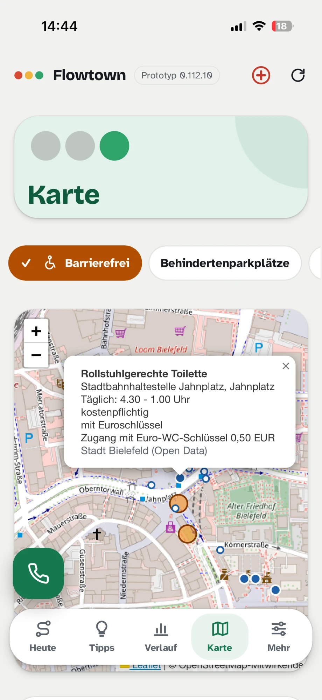

Bielefeld · Pilot
Wir testen in Bielefeld.
Im Pilot sind die Altstadt, der Hauptbahnhof, Bethel und die Universität. Mehr Orte und Städte sind geplant, nicht zugesagt.
Prototyp · Pilot Bielefeld
Sag, wohin du willst. Flowtown zeigt dir in vier Schritten den Weg, was unterwegs gilt und woher jede Angabe kommt.
Kostenlos. Ohne Konto. Keine Cookies.

So funktioniert’s
Sprich oder tippe, wohin du willst.
„Womit komme ich zur Uni?“
Auto, Bus und Bahn, Rad und zu Fuß, jeweils mit Angaben, Quelle und Stand.
Du wählst den Weg, der zu dir passt.
Gerade jetzt: Störungen, Baustellen, Aufzüge. Ansagen auf dem Weg.
Ein anderer Weg, wenn etwas ausfällt.
Stimmt, Stimmt nicht oder Veraltet. Dein Hinweis geht an die Redaktion.
Fehlt etwas, ergänzt man es vor Ort.
In der App
Die Leiste lässt sich mit dem Finger wischen oder mit den Pfeiltasten bewegen, wenn sie den Fokus hat.



Barrierefrei heißt für jeden etwas anderes
Flowtown zeigt, was für dein Profil wichtig ist, nicht alles, was über einen Ort bekannt ist. Wer kein Profil braucht, lässt es aus.
Belegt statt geraten
Jede Angabe trägt ihre Quelle und ihr Alter. Fehlt sie, steht dort „keine Angabe“. Unbekannt ist nie „passt“.
Bielefeld · Pilot
Im Pilot sind die Altstadt, der Hauptbahnhof, Bethel und die Universität. Mehr Orte und Städte sind geplant, nicht zugesagt.
Mitmachen
Melde, was stimmt oder fehlt.